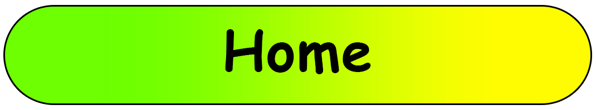
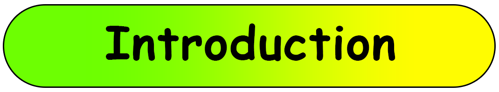
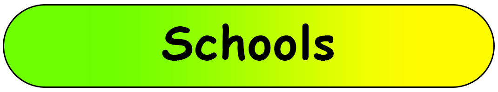
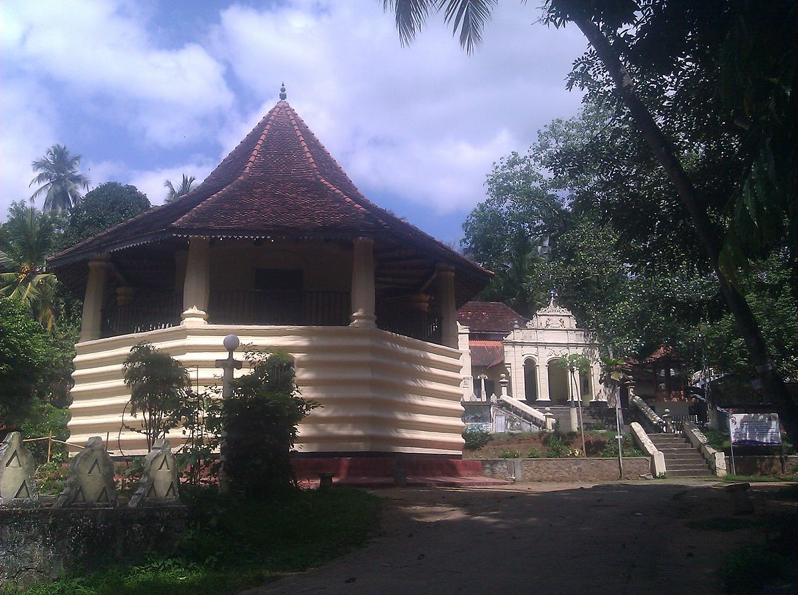

|  |
|  |
|  |
Beligammana Raja Maha Vihara |
|
|---|---|
|  | Beligammana Raja Maha Vihara (also known as Beligammana Pothgul Vihara) is a Buddhist temple situated in Mawanella, Kegalle District, Sri Lanka. It is lies on the Colombo – Kandy main road, approximately 1 km (0.62 mi) away from the Mawanella town. Constructed in the early part of the 19th century, this temple is presently declared as an archaeological protected monument by the Department of Archaeology. The designation was declared on 7 December 2001 under the government Gazette number 1214. |
Aluthnuwara Dedimunda Devalaya at Mawanella |
|
 |
It is believed that the Dedimunda Deiyo is the guardian deity of the Buddha Sasana. The name of the deity suggests that he was firm, hardhearted with a strong and powerful personality. |
Devanagala Rajamaha Viharaya |
|
 |
Devanagala Raja Maha Viharaya is an ancient cave temple in the Mawanella area of the Kegalle District which has been in news recently. Devanagala Temple is believed to be built during the era of King Parakramabahu the Great (1153-1186) of Polonnaruwa Kingdom. There is also belief that the temple was first built by king Wattagamini Abaya, better known as King Walagamba (89-77 BC). This temple has housed the Dalada of the Buddha in the past and the ruins of this building still can be seen. |